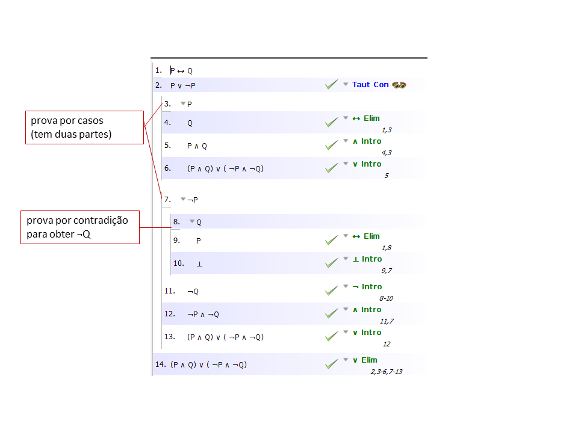

A pergunta 11 do teste 2012-1 é:
Mostre através de uma prova formal usando o software de apoio que (P ∧ Q) ∨ ( ¬P ∧ ¬Q) é uma consequência de P ↔ Q.
Apresento
de seguida duas maneiras de resolver esta questão. Na primeira
utiliza-se a regra da Consequência Tautológica no passo 2 para arrancar
uma prova por casos.